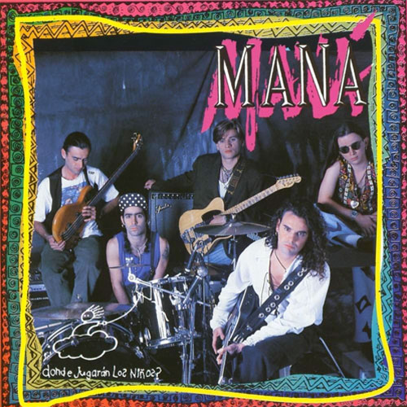

En 1986 cuando, deciden formar un nuevo grupo de rock al que llaman Maná (energía positiva en polinesio) en donde fusionan nuevos sonidos de rock con ritmos latinos y caribeños. El grupo quedó conformado por Fher Olvera como vocalista y principal compositor, los hermanos Ulises y Juan Diego Calleros, en guitarra y bajo respectivamente, y Alex González, con tan solo 15 años, en la batería.
1987 lanzan su primer material titulado simplemente Maná, y dos años después Falta amor, del que se desprende el sencillo “Rayando el Sol” con el cual la banda se da a conocer a nivel nacional. Tres años después lanzan ¿Dónde Jugarán Los Niños?, material con el que logran un éxito sin precedente y se convierten en referente obligado en la escena del rock en Latinoamérica gracias a los sencillos “Vivir sin Aire”, “Oye mi Amor”, “De Pies a Cabeza” y “Me Vale” entre otros. Su tour recorre todos los países de América Latina y Europa en donde reciben la invitación para participar del prestigioso Festival Internacional de jazz de Montreaux en Suiza.
En 1995 editan Cuándo los Ángeles Lloran, álbum con el cuál la banda no solo reforzó el éxito ya alcanzado, sino que hizo evidente una notable evolución lírica y de sonido. En 1996 con el fin de crear conciencia sobre uno de los temas de su mayor interés, crean la Fundación Ecológica Selva Negra. Sueños Líquidos lanzado en 1997, se convierte en el quinto álbum de la banda, llevándolos a la que sería la gira más extensa de un artista latino por Estados Unidos. Finalizada la gira, la banda recibe la invitación de Carlos Santana para colaborar en su nuevo material, el resultado fue “Corazón Espinado”, tema compuesto por Fher Olvera, que se colocó en los primeros lugares de Europa, Asia y América.
En 1999 Maná lanza MTV Unplugged, hasta el momento el disco más vendido en dicho formato por un artista latino. Con Revolución de Amor lanzado en 2002 la banda experimentó con nuevas fusiones y ritmos y contaron con la colaboración de Carlos Santana y Rubén Blades. De este álbum se desprendieron los éxitos “Mariposa Traicionera” y “Eres mi Religión” entre otros.
En 2006 la banda presenta Amar es Combatir, producción de la cual se desprendieron cinco sencillos que mantuvieron a Maná en los primeros lugares de las listas de popularidad. Los temas más destacados fueron “Labios Compartidos” y “Bendita Tu Luz” que contó con la colaboración de Juan Luis Guerra entre otros. En abril de 2011 Maná vuelve con un disco más experimental Drama y Luz. En esta producción además de incluir arreglos de cuerdas y metales, la banda se aventuró a realizar un DVD titulado Making of the Album, en donde documentan el proceso de creación de Drama y Luz. Este tour recorrió las arenas y estadios de Estados Unidos, Latinoamérica y España. Gracias al éxito obtenido fueron invitados al Festival Rock in Rio en Rio de Janeiro en 2011 y en Madrid en 2012.
En abril de 2015 se edita Cama Incendiada, un álbum de canciones originales que marca el regreso de Maná a los escenarios y significa una incursión en los sonidos del rock latino más potentes y viscerales, un disco lleno de fuerza y vitalidad. Su sencillo titulado “Mi verdad”, alcanzó la posición #1 en el ranking de la radio, convirtiéndolos así en la banda de rock con más #1 en las principales listas de radio.
Maná ha sido reconocido a lo largo de su carrera con múltiples premios, nominaciones y reconocimientos, en 2016 fueron honrados con una estrella en el paseo de la fama en Hollywood, California, convirtiéndose en la primera agrupación mexicana de rock en obtener este reconocimiento.
En diciembre de 2017, la banda recibió una distinción muy importante que los llevaría a cerrar el año con broche de oro: La Medalla del Mérito a las Bellas Artes por parte del Ministerio Español de Educación, Deporte y Cultura En 2018 la banda recibió el reconocimiento de la prestigiosa revista Billboard “Latin Music Lifetime Award” en una ceremonia en el hotel Mandalay Bay de las Vegas y televisada por la cadena telemundo para toda la region .
Luego emprendieron durante el verano una gira de festivales por las principales ciudades del España para culminar el año con el reconocimiento máximo de la academia Latina de la Grabación como “persona del año” por su extensa y exitosa carrera y su compromiso en causas sociales y humanitarias . En 2019 Maná lanza “Rayando el sol “ con el cantante español Pablo Alborán y anuncia su tour mundial “Rayando el Sol Tour” que recorrerá mas de 30 ciudades por todos los Estados Unidos comenzando en Laredo Texas el 30 de Agosto y culminando el 7 de diciembre en Los Angeles California con el 7mo concierto en The Forum estableciendo el record de mayor cantidad de conciertos en una gira desde su reapertura en 2014.
Su música trasciende generaciones, 11 álbumes con canciones originales, varios en vivo y compilados . A lo largo de las últimas tres décadas, han utilizado su reconocimiento internacional y su voz para crear conciencia sobre problemas ambientales, sociales, políticos y de derechos humanos en todo el mundo ,se han preocupado por defender la democracia en Latinoamérica y han empujado enfáticamente por los derechos de los migrantes en los Estados Unidos entrevistándose con mandatarios, ex presidentes y políticos como Barack Obama, Hillary Clinton y Al Gore entre otros.
| Album | Nombre | Año | Descripción |
| Mana | 1987 | En 1987, el grupo firmó con la discográfica Polygram y publicó Maná, disco que afianzaría el movimiento Rock en tu idioma; entre sus sencillos, estaban diez temas. | |
| Falta amor | 1990 | Con esa idea en mente graban el álbum Falta Amor (1989), que no obtiene éxito sino hasta un año después de su lanzamiento gracias al sencillo “Rayando el sol”, el cual se convierte en el primer gran éxito para Maná; los sencillos “Perdido en un barco”, “Estoy agotado” y “Buscándola” llegan también al gusto de la gente. | |
|  | Donde jugarán los niños | 1992 | Ocho sencillos de esta producción encabezaron las listas de popularidad en toda la América hispanoparlante y se han convertido en temas clásicos de su repertorio: “Vivir sin aire”, “¿Dónde jugarán los niños?”, “De pies a cabeza”, “Como te deseo”, “Oye mi amor”, “Cómo diablos”, “Te lloré un río” y “Me vale”. |